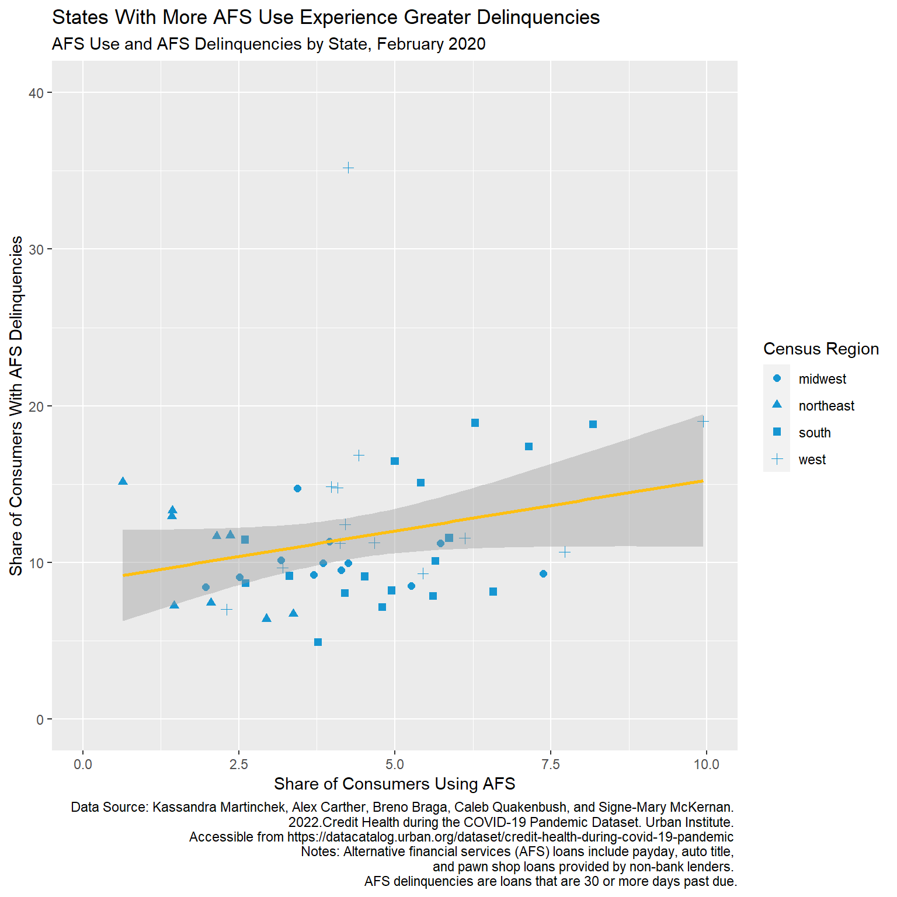
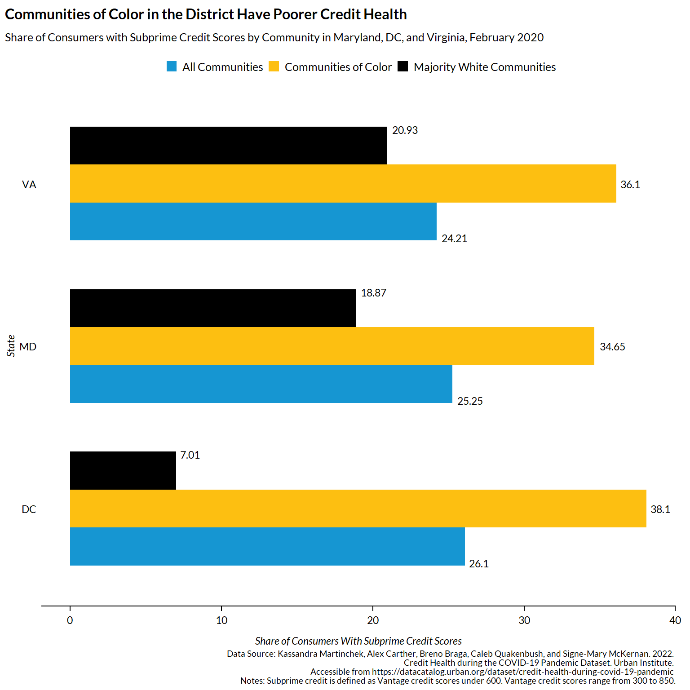
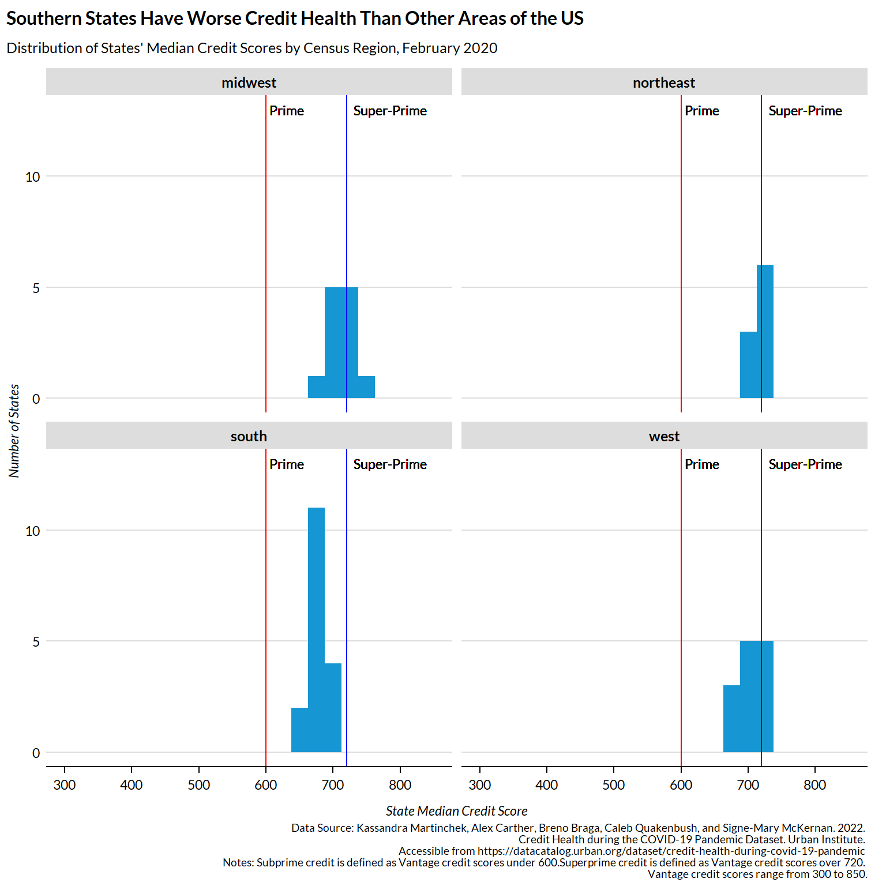
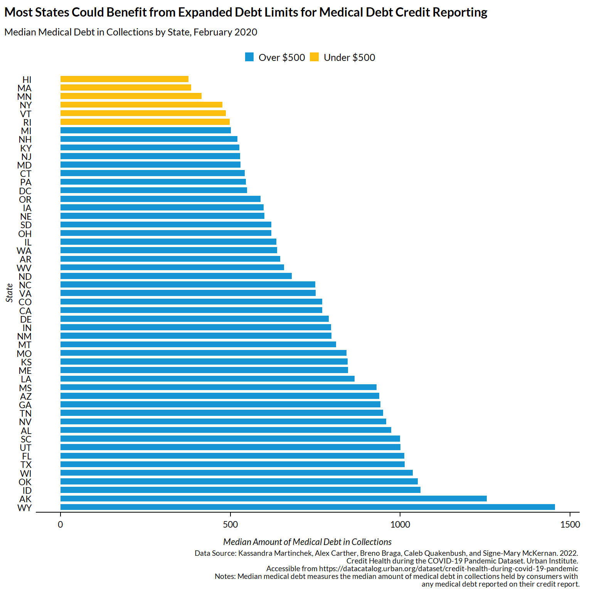

# load in relevant libraries for analysis
library(readxl)
library(tidyverse)
library(stringr)
library(urbnthemes)
# load in the data
credit_feb20 <- read_excel("data/covidcredithealth_state.xlsx", sheet = "State 2020_02")
# rename column names to be snake case for analysis
colnames(credit_feb20) <- c("state", "subprime_a", "subprime_c", "subprime_w", "collections_a", "collections_c", "collections_w", "med_debt_a", "med_debt_c", "med_debt_w", "cred_use_a", "cred_use_c", "cred_use_w", "stud_del_a", "stud_del_c", "stud_del_w", "cred_del_a", "cred_del_c", "cred_del_w", "auto_del_a", "auto_del_c", "auto_del_w", "mort_del_a", "mort_del_c", "mort_del_w", "afs_use_a", "afs_use_c", "afs_use_w", "afs_del_a", "afs_del_c", "afs_del_w", "score_a", "score_c", "score_w", "mmed_a", "mmed_c", "mmed_w", "medical_a", "medical_c", "medical_w")
# replace n/a values in strings
credit_feb20 <- credit_feb20 %>%
mutate(across(.cols = everything(), .fns = ~str_replace(., "n/a", "")))
# remove $ from median debt variables
credit_feb20 <- credit_feb20 %>%
mutate(med_debt_a = str_remove(string = med_debt_a, pattern = "\\$")) %>%
mutate(med_debt_c = str_remove(string = med_debt_c, pattern = "\\$")) %>%
mutate(med_debt_w = str_remove(string = med_debt_w, pattern = "\\$")) %>%
mutate(mmed_a = str_remove(string = mmed_a, pattern = "\\$")) %>%
mutate(mmed_c = str_remove(string = mmed_c, pattern = "\\$")) %>%
mutate(mmed_w = str_remove(string = mmed_w, pattern = "\\$"))
# make string data numeric
credit_feb20 <- credit_feb20 %>%
mutate(across(.cols = !state, .fns = ~as.numeric(.)))
# add in the Census regions of the US to the data
# reference to Census regions here: https://www2.census.gov/geo/pdfs/maps-data/maps/reference/us_regdiv.pdf
credit_feb20 <- credit_feb20 %>%
mutate(region = case_when(state == "CT" | state == "ME" | state == "MA" | state == "NH" | state == "RI" | state == "VT" | state == "NJ" | state == "NY" | state == "PA" ~ "northeast",
state == "IN" | state == "IL" | state == "MI" | state == "OH" | state == "WI" | state == "IA" | state == "KS" | state == "MN" | state == "MO" | state == "NE" | state == "ND" | state == "SD" ~ "midwest",
state == "DE" | state == "DC" | state == "FL" | state == "GA" | state == "MD" | state == "NC" | state == "SC" | state == "VA" | state == "WV" | state == "AL" | state == "KY" | state == "MS" | state == "TN" | state == "AR" | state == "LA" | state == "OK" | state == "TX" ~ "south",
state == "AZ" | state == "CO" | state == "ID" | state == "NM" | state == "MT" | state == "UT" | state == "NV" | state == "WY" | state == "AK" | state == "CA" | state == "HI" | state == "OR" | state == "WA" ~ "west"))Data Science for Public Policy
Data Visualization, Quarto, and Git
Project Introduction
This data project explores trends in credit and debt in U.S. states in February 2020. The goal of this project is to understand disparities in credit health between states and communities and explore the potential implications of policies designed to strengthen consumer credit health.
Data Details
This project uses data from the Urban Institute’s “Credit Health during the COVID-19 Pandemic” data feature. This data is from a 2 percent random sample of deidentified consumer credit records from one of the main three credit bureaus linked to information on alternative financial service loans (such as payday, pawn shop, and auto title loans) from a Fair Credit Reporting Act regulated agency.
Citation: Kassandra Martinchek, Alex Carther, Breno Braga, Caleb Quakenbush, and Signe-Mary McKernan. 2022. Credit Health during the COVID-19 Pandemic Dataset. Urban Institute. Accessible from https://datacatalog.urban.org/dataset/credit-health-during-covid-19-pandemic
Hyperlink: https://datacatalog.urban.org/dataset/credit-health-during-covid-19-pandemic/resource/0f812245-6b99-4f13-b7e2-e3398a7dc10b
Clean and Prepare the Data for Visualization
Visualization 1: Do States with Consumers Who Use More Payday Loans Have More Trouble Repaying Loans?
# mapping AFS use against AFS delinquencies
credit_feb20 %>%
ggplot() +
geom_point(mapping = aes(x = afs_use_a, y = afs_del_a, shape = region), color = "#1696d2", size = 2) +
scale_x_continuous(limits = c(0, 10)) +
scale_y_continuous(limits = c(0, 40)) +
geom_smooth(method = lm, mapping = aes(x = afs_use_a, y = afs_del_a), color = "#fdbf11", linetype = "solid") +
labs(
shape = "Census Region",
title = "States With More AFS Use Experience Greater Delinquencies",
subtitle = "AFS Use and AFS Delinquencies by State, February 2020",
caption = "Data Source: Kassandra Martinchek, Alex Carther, Breno Braga, Caleb Quakenbush, and Signe-Mary McKernan. 2022.\nCredit Health during the COVID-19 Pandemic Dataset. Urban Institute. \nAccessible from https://datacatalog.urban.org/dataset/credit-health-during-covid-19-pandemic \nNotes: Alternative financial services (AFS) loans include payday, auto title, and pawn shop loans provided by non-bank lenders. \nAFS delinquencies are loans that are 30 or more days past due.",
x = "Share of Consumers Using AFS",
y = "Share of Consumers With AFS Delinquencies"
) 
This visualization shows the relationship between use of alternative financial services (AFS) and AFS delinquency rates. We see in Visualization 1 see that there is a slight positive relationship between AFS use and AFS delinquency across Census regions, where states with more consumers who use AFS services also exhibit higher AFS delinquency rates. Scholars and policymakers are concerned about how AFS use impacts consumers’ financial health, given research that points to AFS use negatively impacting mental and physical health, bankruptcy, and consumers’ ability to repay loans (Bhutta et al., 2016; Eisenberg-Guyot et al., 2018; Skiba & Tobacman, 2019). Consequently, policymakers have increasingly pursued policies that regulate the interest rates that lenders can charge consumers, with the goal of reducing AFS use. Visualization 1 suggests that these efforts may be associated with a reduction in AFS delinquencies, thus improving consumer’s credit health as they may no longer struggle to repay high-cost loans (like AFS).
Citations
Bhutta, N., Goldin, J., & Homonoff, T. (2016). Consumer borrowing after payday loan bans. The Journal of Law and Economics, 59(1), 225-259.
Eisenberg-Guyot, J., Firth, C., Klawitter, M., & Hajat, A. (2018). From payday loans to pawnshops: Fringe banking, the unbanked, and health. Health Affairs, 37(3), 429-437.
Skiba, P. M., & Tobacman, J. (2019). Do payday loans cause bankruptcy?. The Journal of Law and Economics, 62(3), 485-519.
Visualization 2: Do Communities of Color Have Poorer Credit Than Majority-White Communities in the DMV?
# set urban theme
set_urbn_defaults(style = "print")
# filter data to states in the DMV
dmv_credit <- credit_feb20 %>%
filter(state == "DC" | state == "MD" | state == "VA") %>%
select(state, subprime_a, subprime_c, subprime_w)
# transform data set from wide to long for visualization
viz2 <- pivot_longer(
data = dmv_credit,
cols = c(subprime_a, subprime_c, subprime_w),
names_to = "community",
values_to = "share"
)
# recode community variable for visualization
viz2 <- viz2 %>%
mutate(community = case_when(community == "subprime_a" ~ "all",
community == "subprime_c" ~ "comm col",
community == "subprime_w" ~ "white"))
# stacked bar chart for each state
viz2 %>%
ggplot(aes(x = state, y = share, fill = community)) +
geom_bar(position = "dodge", stat = "identity") +
scale_fill_discrete(name = "Community", labels = c("All Communities", "Communities of Color", "Majority White Communities")) +
coord_flip() +
theme(legend.position = "top") +
geom_text(aes(label = share), position = position_dodge(width = 1), hjust = -0.2, size = 3) +
labs(
title = "Communities of Color in the District Have Poorer Credit Health",
subtitle = "Share of Consumers with Subprime Credit Scores by Community in Maryland, DC, and Virginia, February 2020",
caption = "Data Source: Kassandra Martinchek, Alex Carther, Breno Braga, Caleb Quakenbush, and Signe-Mary McKernan. 2022. \nCredit Health during the COVID-19 Pandemic Dataset. Urban Institute. \nAccessible from https://datacatalog.urban.org/dataset/credit-health-during-covid-19-pandemic \n Notes: Subprime credit is defined as Vantage credit scores under 600. Vantage credit scores range from 300 to 850.",
x = "State",
y = "Share of Consumers With Subprime Credit Scores"
) 
This visualization shows how credit health, as measured by the share of consumers with subprime credit, varies among communities in the DMV. Consumers with subprime credit, or credit scores below 600, pay more to borrow funds and have constrained access to low cost credit. We see in Visualization 2 that communities of color in DC, Maryland, and Virginia have higher shares of consumers with subprime credit relative to majority-white communities. This finding reflects a history of structural racism in credit access that has persisted to present day (Kijakazi et al., 2019). Consequently, policymakers interested in addressing disparities in credit health that persist across communities need to consider policies that explicitly address racial disparities.
Citations
Kijakazi, K., Brown, S., Charleston, D., & Runes, C. (2019). Next50 Catalyst Brief: Structural Racism. Urban Institute.
Visualization 3: How Do Regions Vary In Their Median Credit Scores? Is There Geographic Variation in Credit Health in the US?
# set urban theme
set_urbn_defaults(style = "print")
prime <- c("Super-Prime")
subprime <- c("Prime")
# create histograms of median credit score by region
credit_feb20 %>%
ggplot() +
geom_histogram(mapping = aes(x = score_a), binwidth = 25) +
geom_vline(xintercept = 600, color = "red") +
geom_vline(xintercept = 720, color = "blue") +
geom_text(aes(x = 600, y = 10, label = subprime), size = 3, hjust = -0.1) +
geom_text(aes(x = 720, y = 10, label = prime), size = 3, hjust = -0.1) +
scale_color_manual(values = c("600" = "red", "720" = "blue")) +
facet_wrap(~ region) +
labs(
title = "Southern States Have Worse Credit Health Than Other Areas of the US",
subtitle = "Distribution of States' Median Credit Scores by Census Region, February 2020",
caption = "Data Source: Kassandra Martinchek, Alex Carther, Breno Braga, Caleb Quakenbush, and Signe-Mary McKernan. 2022. \nCredit Health during the COVID-19 Pandemic Dataset. Urban Institute. \nAccessible from https://datacatalog.urban.org/dataset/credit-health-during-covid-19-pandemic \nNotes: Subprime credit is defined as Vantage credit scores under 600.Superprime credit is defined as Vantage credit scores over 720. \nVantage credit scores range from 300 to 850.",
x = "State Median Credit Score",
y = "Number of States"
)
This visualization shows how credit health varies among Census regions, as measured by the distribution of median state-level credit scores within each region. In Visualization 3, we see that while no states have a median credit score that is subprime, only the Southern Census region has no states with median credit scores in the super-prime range (credit scores between 720-850).This finding suggests that credit health has geographic variation in addition to race-based variation. Policymakers interested in improving consumers’ credit health may consequently be interested in place-based policies, such as tax credits or targeted investments, that can address regional variation in consumer credit (Theodos et al., 2022).
Citations
Theodos, B., Stacy, C., Teles, D., Davis, C., & Hariharan, A. (2022). Place‐based investment and neighborhood change: The impacts of New Markets Tax Credits on jobs, poverty, and neighborhood composition. Journal of Regional Science.
Visualization 4: Which States Would Benefit From Expanded Policy Guidance on Medical Debt Reporting?
#| fig.height: 10
# set urban theme
set_urbn_defaults(style = "print")
# create the visualization--- color is not working perfectly
credit_feb20 %>%
mutate(med_over500 = if_else(mmed_a > 500, "#1696d2", "#fdbf11")) %>%
arrange(desc(mmed_a)) %>%
ggplot() +
geom_col(mapping = aes(x = mmed_a, y = reorder(state, -mmed_a), fill = med_over500)) +
scale_fill_discrete(labels = c("Over $500", "Under $500")) +
labs(
title = "Most States Could Benefit from Expanded Debt Limits for Medical Debt Credit Reporting",
subtitle = "Median Medical Debt in Collections by State, February 2020",
caption = "Data Source: Kassandra Martinchek, Alex Carther, Breno Braga, Caleb Quakenbush, and Signe-Mary McKernan. 2022. \nCredit Health during the COVID-19 Pandemic Dataset. Urban Institute. \nAccessible from https://datacatalog.urban.org/dataset/credit-health-during-covid-19-pandemic \nNotes: Median medical debt measures the median amount of medical debt in collections held by consumers with \nany medical debt reported on their credit report.",
x = "Median Amount of Medical Debt in Collections",
y = "State"
)
This visualization shows how the median amount of medical debt held by consumers varies across states. In April 2022, the Biden Administration and credit reporting companies acted together to stop reporting medical debt trade lines (or individual medical debt bills) under 500 dollars on consumers’ credit reports (White House, 2022). The motivation around this policy was that medical debt was not predictive of consumers’ ability to repay, which is what credit reporting aims to capture, and often hobbles consumers’ financial health to great personal cost when it is reported on consumer credit records (Batty et al., 2021). While this policy change will undoubtedly help millions of consumers with hard-to-repay medical debt, many consumers may have medical debt that exceeds the 500 dollar limit, as evidenced in Visualization 4 where most states have median medical debt in collections that exceeds 500 dollars. Consequently, policymakers interested in addressing the financial implications of medical care should consider increasing the amount of medical debt that is not reported to credit agencies.
Citations
Batty, M., Gibbs, C., & Ippolito, B. (2021). Health insurance, medical debt, and financial well-being. American Enterprise Institute Working Paper. Accessible from: https://www.aei.org/wp-content/uploads/2021/03/Batty-Gibbs-Ippolito-health-insurance-medical-debt-financial-well-being-WP.pdf?x91208
White House. (2022). FACT SHEET: The Biden Administration Announces New Actions to Lessen the Burden of Medical Debt and Increase Consumer Protection. Accessible from: https://www.whitehouse.gov/briefing-room/statements-releases/2022/04/11/fact-sheet-the-biden-administration-announces-new-actions-to-lessen-the-burden-of-medical-debt-and-increase-consumer-protection/